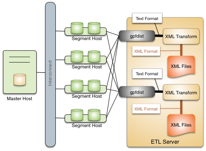
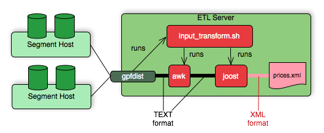
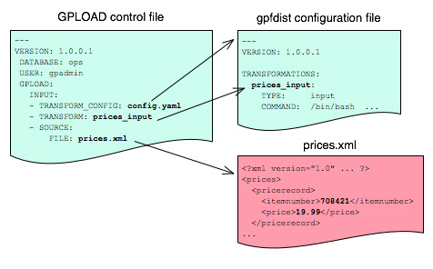

Transforming External Data with gpfdist and gpload
The gpfdist parallel file server allows you to set up transformations that enable SynxDB external tables to read and write files in formats that are not supported with the CREATE EXTERNAL TABLE command’s FORMAT clause. An input transformation reads a file in the foreign data format and outputs rows to gpfdist in the CSV or other text format specified in the external table’s FORMAT clause. An output transformation receives rows from gpfdist in text format and converts them to the foreign data format.
Note
gpfdistandgploadare compatible only with the SynxDB major version in which they are shipped. For example, agpfdistutility that is installed with SynxDB 4.x cannot be used with SynxDB 1.x or 2.x.
This topic describes the tasks to set up data transformations that work with gpfdist to read or write external data files with formats that SynxDB does not support.
- About gpfdist Transformations
- Determine the Transformation Schema
- Write a Transformation
- Write the gpfdist Configuration File
- Transfer the Data
- Configuration File Format
- XML Transformation Examples
About gpfdist Transformations
To set up a transformation for a data format, you provide an executable command that gpfdist can call with the name of the file containing data. For example, you could write a shell script that runs an XSLT transformation on an XML file to output rows with columns delimited with a vertical bar (|) character and rows delimited with linefeeds.
Transformations are configured in a YAML-formatted configuration file passed to gpfdist on the command line.
If you want to load the external data into a table in the SynxDB database, you can use the gpload utility to automate the tasks to create an external table, run gpfdist, and load the transformed data into the database table.
Accessing data in external XML files from within the database is a common example requiring transformation. The following diagram shows gpfdist performing a transformation on XML files on an ETL server.

Following are the high-level steps to set up a gpfdist transformation for external data files. The process is illustrated with an XML example.
- Determine the transformation schema.
- Write a transformation.
- Write the gpfdist configuration file.
- Transfer the data.
Determine the Transformation Schema
To prepare for the transformation project:
- Determine the goal of the project, such as indexing data, analyzing data, combining data, and so on.
- Examine the source files and note the file structure and element names.
- Choose the elements to import and decide if any other limits are appropriate.
For example, the following XML file, prices.xml, is a simple XML file that contains price records. Each price record contains two fields: an item number and a price.
<?xml version="1.0" encoding="ISO-8859-1" ?>
<prices>
<pricerecord>
<itemnumber>708421</itemnumber>
<price>19.99</price>
</pricerecord>
<pricerecord>
<itemnumber>708466</itemnumber>
<price>59.25</price>
</pricerecord>
<pricerecord>
<itemnumber>711121</itemnumber>
<price>24.99</price>
</pricerecord>
</prices>
The goal of this transformation is to import all the data into a SynxDB readable external table with an integer itemnumber column and a decimal price column.
Write a Transformation
The transformation specifies what to extract from the data. You can use any authoring environment and language appropriate for your project. For XML transformations choose from technologies such as XSLT, Joost (STX), Java, Python, or Perl, based on the goals and scope of the project.
In the price example, the next step is to transform the XML data into a two-column delimited text format.
708421|19.99
708466|59.25
711121|24.99
The following STX transform, called input_transform.stx, performs the data transformation.
<?xml version="1.0"?>
<stx:transform version="1.0"
xmlns:stx="http://stx.sourceforge.net/2002/ns"
pass-through="none">
<!-- declare variables -->
<stx:variable name="itemnumber"/>
<stx:variable name="price"/>
<!-- match and output prices as columns delimited by | -->
<stx:template match="/prices/pricerecord">
<stx:process-children/>
<stx:value-of select="$itemnumber"/>
<stx:text>|</stx:text>
<stx:value-of select="$price"/> <stx:text>
</stx:text>
</stx:template>
<stx:template match="itemnumber">
<stx:assign name="itemnumber" select="."/>
</stx:template>
<stx:template match="price">
<stx:assign name="price" select="."/>
</stx:template>
</stx:transform>
This STX transform declares two temporary variables, itemnumber and price, and the following rules.
- When an element that satisfies the XPath expression
/prices/pricerecordis found, examine the child elements and generate output that contains the value of theitemnumbervariable, a|character, the value of the price variable, and a newline. - When an
<itemnumber>element is found, store the content of that element in the variableitemnumber. - When a <price> element is found, store the content of that element in the variable
price.
Write the gpfdist Configuration File
The gpfdist configuration is specified as a YAML 1.1 document. It contains rules that gpfdist uses to select a transformation to apply when loading or extracting data.
This example gpfdist configuration contains the following items that are required for the prices.xml transformation scenario:
- the
config.yamlfile definingTRANSFORMATIONS - the
input_transform.shwrapper script, referenced in theconfig.yamlfile - the
input_transform.stxjoost transformation, called frominput_transform.sh
Aside from the ordinary YAML rules, such as starting the document with three dashes (---), a gpfdist configuration must conform to the following restrictions:
- A
VERSIONsetting must be present with the value1.0.0.1. - A
TRANSFORMATIONSsetting must be present and contain one or more mappings. - Each mapping in the
TRANSFORMATIONmust contain:- a
TYPEwith the value ‘input’ or ‘output’ - a
COMMANDindicating how the transformation is run.
- a
- Each mapping in the
TRANSFORMATIONcan contain optionalCONTENT,SAFE, andSTDERRsettings.
The following gpfdist configuration, called config.yaml, applies to the prices example. The initial indentation on each line is significant and reflects the hierarchical nature of the specification. The transformation name prices_input in the following example will be referenced later when creating the table in SQL.
---
VERSION: 1.0.0.1
TRANSFORMATIONS:
prices_input:
TYPE: input
COMMAND: /bin/bash input_transform.sh %filename%
The COMMAND setting uses a wrapper script called input_transform.sh with a %filename% placeholder. When gpfdist runs the prices_input transform, it invokes input_transform.sh with /bin/bash and replaces the %filename% placeholder with the path to the input file to transform. The wrapper script called input_transform.sh contains the logic to invoke the STX transformation and return the output.
If Joost is used, the Joost STX engine must be installed.
#!/bin/bash
# input_transform.sh - sample input transformation,
# demonstrating use of Java and Joost STX to convert XML into
# text to load into SynxDB.
# java arguments:
# -jar joost.jar joost STX engine
# -nodecl don't generate a <?xml?> declaration
# $1 filename to process
# input_transform.stx the STX transformation
#
# the AWK step eliminates a blank line joost emits at the end
java \
-jar joost.jar \
-nodecl \
$1 \
input_transform.stx \
| awk 'NF>0'
The input_transform.sh file uses the Joost STX engine with the AWK interpreter. The following diagram shows the process flow as gpfdist runs the transformation.

Transfer the Data
Create the target database tables with SQL statements based on the appropriate schema.
There are no special requirements for SynxDB tables that hold loaded data. In the prices example, the following command creates the prices table, where the data is to be loaded.
CREATE TABLE prices (
itemnumber integer,
price decimal
)
DISTRIBUTED BY (itemnumber);
Next, use one of the following approaches to transform the data with gpfdist.
gploadsupports only input transformations, but in many cases is easier to implement.gpfdistwithINSERT INTO SELECT FROMsupports both input and output transformations, but exposes details thatgploadautomates for you.
Transforming with gpload
The SynxDB gpload utility orchestrates a data load operation using the gpfdist parallel file server and a YAML-formatted configuration file. gpload automates these tasks:
- Creates a readable external table in the database.
- Starts
gpfdistinstances with the configuration file that contains the transformation. - Runs
INSERT INTO table\_name SELECT FROM external\_tableto load the data. - Removes the external table definition.
Transforming data with gpload requires that the settings TRANSFORM and TRANSFORM_CONFIG appear in the INPUT section of the gpload control file.
For more information about the syntax and placement of these settings in the gpload control file, see the SynxDB Reference Guide.
TRANSFORM_CONFIGspecifies the name of the gpfdist configuration file.- The
TRANSFORMsetting indicates the name of the transformation that is described in the file named inTRANSFORM_CONFIG.
---
VERSION: 1.0.0.1
DATABASE: ops
USER: gpadmin
GPLOAD:
INPUT:
- TRANSFORM_CONFIG: config.yaml
- TRANSFORM: prices_input
- SOURCE:
FILE: prices.xml
The transformation name must appear in two places: in the TRANSFORM setting of the gpfdist configuration file and in the TRANSFORMATIONS section of the file named in the TRANSFORM_CONFIG section.
In the gpload control file, the optional parameter MAX_LINE_LENGTH specifies the maximum length of a line in the XML transformation data that is passed to gpload.
The following diagram shows the relationships between the gpload control file, the gpfdist configuration file, and the XML data file.

Transforming with gpfdist and INSERT INTO SELECT FROM
With this load method, you perform each of the tasks that gpload automates. You start gpfdist, create an external table, load the data, and clean up by dropping the table and stopping gpfdist.
Specify the transformation in the CREATE EXTERNAL TABLE definition’s LOCATION clause. For example, the transform is shown in bold in the following command. (Run gpfdist first, using the command gpfdist -c config.yaml).
CREATE READABLE EXTERNAL TABLE prices_readable (LIKE prices)
LOCATION ('gpfdist://hostname:8080/prices.xml#transform=prices_input')
FORMAT 'TEXT' (DELIMITER '|')
LOG ERRORS SEGMENT REJECT LIMIT 10;
In the command above, change hostname to your hostname. prices_input comes from the gpfdist configuration file.
The following query then loads the data into the prices table.
INSERT INTO prices SELECT * FROM prices_readable;
Configuration File Format
The gpfdist configuration file uses the YAML 1.1 document format and implements a schema for defining the transformation parameters. The configuration file must be a valid YAML document.
The gpfdist program processes the document in order and uses indentation (spaces) to determine the document hierarchy and relationships of the sections to one another. The use of white space is significant. Do not use white space for formatting and do not use tabs.
The following is the basic structure of a configuration file.
---
VERSION: 1.0.0.1
TRANSFORMATIONS:
transformation_name1:
TYPE: input | output
COMMAND: command
CONTENT: data | paths
SAFE: posix-regex
STDERR: server | console
transformation_name2:
TYPE: input | output
COMMAND: command
...
VERSION : Required. The version of the gpfdist configuration file schema. The current version is 1.0.0.1.
TRANSFORMATIONS : Required. Begins the transformation specification section. A configuration file must have at least one transformation. When gpfdist receives a transformation request, it looks in this section for an entry with the matching transformation name.
TYPE
: Required. Specifies the direction of transformation. Values are input or output.
input: gpfdist treats the standard output of the transformation process as a stream of records to load into SynxDB.output: gpfdist treats the standard input of the transformation process as a stream of records from SynxDB to transform and write to the appropriate output.
COMMAND : Required. Specifies the command gpfdist will run to perform the transformation.
For input transformations, gpfdist invokes the command specified in the CONTENT setting. The command is expected to open the underlying file(s) as appropriate and produce one line of TEXT for each row to load into SynxDB. The input transform determines whether the entire content should be converted to one row or to multiple rows.
For output transformations, gpfdist invokes this command as specified in the CONTENT setting. The output command is expected to open and write to the underlying file(s) as appropriate. The output transformation determines the final placement of the converted output.
CONTENT
: Optional. The values are data and paths. The default value is data.
- When
CONTENTspecifiesdata, the text%filename%in theCOMMANDsection is replaced by the path to the file to read or write. - When
CONTENTspecifiespaths, the text%filename%in theCOMMANDsection is replaced by the path to the temporary file that contains the list of files to read or write.
The following is an example of a COMMAND section showing the text %filename% that is replaced.
COMMAND: /bin/bash input_transform.sh %filename%
SAFE
: Optional. A POSIX regular expression that the paths must match to be passed to the transformation. Specify SAFE when there is a concern about injection or improper interpretation of paths passed to the command. The default is no restriction on paths.
STDERR
: Optional. The values are server and console.
This setting specifies how to handle standard error output from the transformation. The default, server, specifies that gpfdist will capture the standard error output from the transformation in a temporary file and send the first 8k of that file to SynxDB as an error message. The error message will appear as an SQL error. Console specifies that gpfdist does not redirect or transmit the standard error output from the transformation.
XML Transformation Examples
The following examples demonstrate the complete process for different types of XML data and STX transformations. Files and detailed instructions associated with these examples are in the GitHub repo https://github.com/apache/cloudberry in the gpMgmt/demo/gpfdist_transform directory. Read the README file in the Before You Begin section before you run the examples. The README file explains how to download the example data file used in the examples.
Command-based External Web Tables
The output of a shell command or script defines command-based web table data. Specify the command in the EXECUTE clause of CREATE EXTERNAL WEB TABLE. The data is current as of the time the command runs. The EXECUTE clause runs the shell command or script on the specified master, and/or segment host or hosts. The command or script must reside on the hosts corresponding to the host(s) defined in the EXECUTE clause.
By default, the command is run on segment hosts when active segments have output rows to process. For example, if each segment host runs four primary segment instances that have output rows to process, the command runs four times per segment host. You can optionally limit the number of segment instances that run the web table command. All segments included in the web table definition in the ON clause run the command in parallel.
The command that you specify in the external table definition runs from the database and cannot access environment variables from .bashrc or .profile. Set environment variables in the EXECUTE clause. For example:
=# CREATE EXTERNAL WEB TABLE output (output text)
EXECUTE 'PATH=/home/gpadmin/programs; export PATH; myprogram.sh'
FORMAT 'TEXT';
Scripts must be executable by the gpadmin user and reside in the same location on the master or segment hosts.
The following command defines a web table that runs a script. The script runs on each segment host where a segment has output rows to process.
=# CREATE EXTERNAL WEB TABLE log_output
(linenum int, message text)
EXECUTE '/var/load_scripts/get_log_data.sh' ON HOST
FORMAT 'TEXT' (DELIMITER '|');
IRS MeF XML Files (In demo Directory)
This example demonstrates loading a sample IRS Modernized eFile tax return using a Joost STX transformation. The data is in the form of a complex XML file.
The U.S. Internal Revenue Service (IRS) made a significant commitment to XML and specifies its use in its Modernized e-File (MeF) system. In MeF, each tax return is an XML document with a deep hierarchical structure that closely reflects the particular form of the underlying tax code.
XML, XML Schema and stylesheets play a role in their data representation and business workflow. The actual XML data is extracted from a ZIP file attached to a MIME “transmission file” message. For more information about MeF, see Modernized e-File (Overview) on the IRS web site.
The sample XML document, RET990EZ_2006.xml, is about 350KB in size with two elements:
- ReturnHeader
- ReturnData
The <ReturnHeader> element contains general details about the tax return such as the taxpayer’s name, the tax year of the return, and the preparer. The <ReturnData> element contains multiple sections with specific details about the tax return and associated schedules.
The following is an abridged sample of the XML file.
<?xml version="1.0" encoding="UTF-8"?>
<Return returnVersion="2006v2.0"
xmlns="https://www.irs.gov/efile"
xmlns:efile="https://www.irs.gov/efile"
xsi:schemaLocation="https://www.irs.gov/efile"
xmlns:xsi="http://www.w3.org/2001/XMLSchema-instance">
<ReturnHeader binaryAttachmentCount="1">
<ReturnId>AAAAAAAAAAAAAAAAAAAA</ReturnId>
<Timestamp>1999-05-30T12:01:01+05:01</Timestamp>
<ReturnType>990EZ</ReturnType>
<TaxPeriodBeginDate>2005-01-01</TaxPeriodBeginDate>
<TaxPeriodEndDate>2005-12-31</TaxPeriodEndDate>
<Filer>
<EIN>011248772</EIN>
... more data ...
</Filer>
<Preparer>
<Name>Percy Polar</Name>
... more data ...
</Preparer>
<TaxYear>2005</TaxYear>
</ReturnHeader>
... more data ..
The goal is to import all the data into a SynxDB database. First, convert the XML document into text with newlines “escaped”, with two columns: ReturnId and a single column on the end for the entire MeF tax return. For example:
AAAAAAAAAAAAAAAAAAAA|<Return returnVersion="2006v2.0"...
Load the data into SynxDB.
WITSML™ Files (In demo Directory)
This example demonstrates loading sample data describing an oil rig using a Joost STX transformation. The data is in the form of a complex XML file downloaded from energistics.org.
The Wellsite Information Transfer Standard Markup Language (WITSML™) is an oil industry initiative to provide open, non-proprietary, standard interfaces for technology and software to share information among oil companies, service companies, drilling contractors, application vendors, and regulatory agencies. For more information about WITSML™, see https://www.energistics.org/.
The oil rig information consists of a top level <rigs> element with multiple child elements such as <documentInfo>, <rig>, and so on. The following excerpt from the file shows the type of information in the <rig> tag.
<?xml version="1.0" encoding="UTF-8"?>
<?xml-stylesheet href="../stylesheets/rig.xsl" type="text/xsl" media="screen"?>
<rigs
xmlns="https://www.energistics.org/schemas/131"
xmlns:xsi="https://www.w3.org/2001/XMLSchema-instance"
xsi:schemaLocation="https://www.energistics.org/schemas/131 ../obj_rig.xsd"
version="1.3.1.1">
<documentInfo>
... misc data ...
</documentInfo>
<rig uidWell="W-12" uidWellbore="B-01" uid="xr31">
<nameWell>6507/7-A-42</nameWell>
<nameWellbore>A-42</nameWellbore>
<name>Deep Drill #5</name>
<owner>Deep Drilling Co.</owner>
<typeRig>floater</typeRig>
<manufacturer>Fitsui Engineering</manufacturer>
<yearEntService>1980</yearEntService>
<classRig>ABS Class A1 M CSDU AMS ACCU</classRig>
<approvals>DNV</approvals>
... more data ...
The goal is to import the information for this rig into SynxDB.
The sample document, rig.xml, is about 11KB in size. The input does not contain tabs so the relevant information can be converted into records delimited with a pipe (|).
W-12|6507/7-A-42|xr31|Deep Drill #5|Deep Drilling Co.|John Doe|John.Doe@example.com|
With the columns:
well_uid text, – e.g. W-12well_name text, – e.g. 6507/7-A-42rig_uid text, – e.g. xr31rig_name text, – e.g. Deep Drill #5rig_owner text, – e.g. Deep Drilling Co.rig_contact text, – e.g. John Doerig_email text, – e.g. John.Doe@example.comdoc xml
Then, load the data into SynxDB.